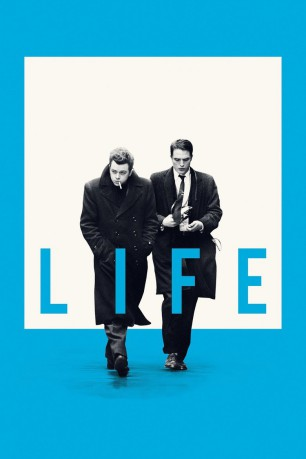
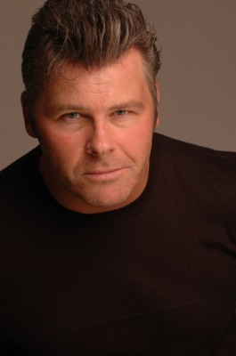
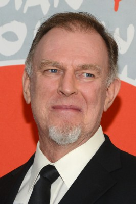
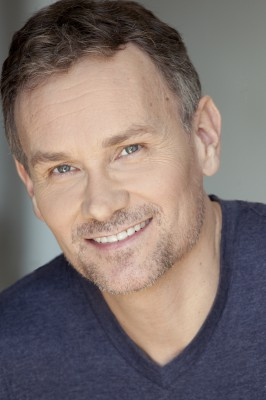

#5420 Life
 
 IMDB-Wertung: 6.1 / 10
IMDB-Wertung: 6.1 / 10  Metascore: 0
Metascore: 0 
Los Angeles, 1955. Der 26-jährige Fotograf Dennis Stock sieht in dem kommenden, auffällig unkonventionellen Star James Dean seine Chance auf eine anerkannte Kar-riere als Fotograf. Es sind zwei Außenseiter, die sich vorsichtig aufeinander zubewegen und sich schließlich auf eine gemeinsame Fotoreise begeben: im Auftrag des LIFE Magazins, quer durch die USA nach Indiana. Sie sind zu verschieden, um wirklich Freunde zu werden und doch scheint gerade diese Spannung notwendig, um jene herausragenden, weltberühmten Bilder entstehen zu lassen, die über einen geradezu ikonografischen Status verfügen und bis heute berühren.
Jahr: 2015
Dauer: 111 Minuten
FSK: 0
Land: England Studio: SquareOne EntertainmentTonspuren: DTS - ,
Untertitel:
Auflösung: 1080p (1920x808) Größe: 6881 MB
Genre: Drama, Biographie
Regisseur: Anton Corbijn
Drehbuch: Laurie Halse Anderson
Soundtrack:
Darsteller:
 Robert Pattinson als Dennis Stock
Robert Pattinson als Dennis Stock- Peter Lucas als Nicholas Ray
- Lauren Gallagher als Natalie Wood
- Kendal Rae als Messy Actress
- Drew Leger als Boyfriend
 Dane DeHaan als James Dean
Dane DeHaan als James Dean- Alessandra Mastronardi als Pier Angeli
 Jason Blicker als Journalist
Jason Blicker als Journalist- Emily Hurson als Publicity Trooper
 Kristian Bruun als Roger
Kristian Bruun als Roger Joel Edgerton als John Morris
Joel Edgerton als John Morris- Emma Pedersen als John Morris' Secretary
 Ben Kingsley als Jack Warner
Ben Kingsley als Jack Warner-  Philip Maurice Hayes als Marshall, ASIB
-  David Ross Paterson als Premiere Driver
- Mark James Fernandes als Photographer #1
- Stuart McLean als Photographer #2
- Anton Corbijn als Premiere Photographer
 Jack Fulton als Rodney
Jack Fulton als Rodney Michael Therriault als Elia Kazan
Michael Therriault als Elia Kazan- Jimi Shlag als Reporter #2
-  Steve Cumyn als Reporter #3
- Kristen Hager als Veronica
- Julian DeZotti als Male Actor
- Jessica Rose als Carol
- Kelly McCreary als Eartha Kitt
- Rebecca Eady als Bar Girl
 Dwight Ireland als Waiter
Dwight Ireland als Waiter- Ron White als Uncle Marcus
- Kasey Lea als Markie
- Stephen Joffe als Senior Boy
- Jessica Clement als Senior Girl
- Sara Waisglass als High School Hop Girl
- Juno Rinaldi als Mother
- Stephanie Blair als Beautiful Redhead , uncredited
- Lee Anne Ford als Starlet , uncredited
- Justyn Michael Richards als Red Carpet Staff , uncredited
- Anja Savcic als Barbara Glenn , uncredited
- Anna Toppetta als Senior Girl , uncredited
- John Blackwood als Raymond Massey
- Stella Schnabel als Norma
- Allison Brennan als Jack Warner's Assistant
- Paulette Sinclair als Building Manageress
- Salvatore Argante als Barber
- Caitlin Stewart als Julie Harris
- David Talbot als Reporter #1
- Nicholas Rice als Lee Strasberg
- Eve Crawford als Aunt Ortense
- Barbara Gordon als Grandma Dean
- Reg Dreger als Grandpa Dean
Datei: X:\2015(G-M)\Life (2015, FSK0, 1920x808).mkv seit 30.01.2017
Festplatte: HD 2015(A-Z)
 Es gibt insgesamt 129 Filme in der Gruppe '2015(G-M)'
Es gibt insgesamt 129 Filme in der Gruppe '2015(G-M)'